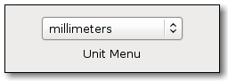

| Top |
GimpUnitMenuGimpUnitMenu — Widget for selecting a GimpUnit. |
 |
GObject ╰── GInitiallyUnowned ╰── GtkObject ╰── GtkWidget ╰── GtkContainer ╰── GtkBin ╰── GtkButton ╰── GtkOptionMenu ╰── GimpUnitMenu
GimpUnitMenu implements AtkImplementorIface, GtkBuildable and GtkActivatable.
This widget provides a GtkOptionMenu which contains a list of GimpUnit's.
You can specify the string that will be displayed for each unit by
passing a printf-like format
string to gimp_unit_menu_new().
The constructor also lets you choose if the menu should contain items for GIMP_UNIT_PIXEL, GIMP_UNIT_PERCENT and a "More..." item which will pop up a dialog for selecting user-defined units.
Whenever the user selects a unit from the menu or the dialog, the "unit_changed" signal will be emitted.
GtkWidget * gimp_unit_menu_new (const gchar *format,GimpUnit unit,gboolean show_pixels,gboolean show_percent,gboolean show_custom);
gimp_unit_menu_new is deprecated and should not be used in newly-written code.
Creates a new GimpUnitMenu widget.
For the format
string's possible expansions, see gimp_unit_format_string().
format |
A printf-like format string which is used to create the unit strings. |
|
unit |
The initially selected unit. |
|
show_pixels |
|
|
show_percent |
|
|
show_custom |
|
void gimp_unit_menu_set_unit (GimpUnitMenu *menu,GimpUnit unit);
gimp_unit_menu_set_unit is deprecated and should not be used in newly-written code.
Sets a new GimpUnit for the specified GimpUnitMenu.
GimpUnit
gimp_unit_menu_get_unit (GimpUnitMenu *menu);
gimp_unit_menu_get_unit is deprecated and should not be used in newly-written code.
Returns the GimpUnit the user has selected from the GimpUnitMenu.
gint
gimp_unit_menu_get_pixel_digits (GimpUnitMenu *menu);
gimp_unit_menu_get_pixel_digits is deprecated and should not be used in newly-written code.
Retrieve the number of digits for a pixel size as set by
gimp_unit_menu_set_pixel_digits().
void gimp_unit_menu_set_pixel_digits (GimpUnitMenu *menu,gint digits);
gimp_unit_menu_set_pixel_digits is deprecated and should not be used in newly-written code.
A GimpUnitMenu can be setup to control the number of digits shown
by attached spinbuttons. Please refer to the documentation of
gimp_unit_menu_update() to see how this is done.
This function allows to specify the number of digits shown for a size in pixels. Usually this is 0 (only full pixels). If you want to allow the user to specify sub-pixel sizes using the attached spinbuttons, specify the number of digits after the decimal point here. You should do this after attaching your spinbuttons.
“unit-changed” signalvoid user_function (GimpUnitMenu *arg0, gpointer user_data)
This signal is emitted whenever the user selects a GimpUnit from the GimpUnitMenu.
Flags: Run First